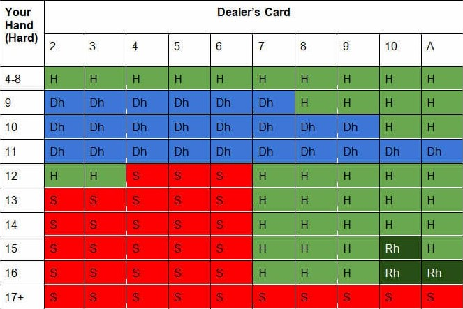

the early origins of BlackJack are debated to this day, but researchers believe that the Romans invented BlackJack. The Romans loved to gamble, and would play the game with wooden blocks with numbers on them. This is only a theory made by researchers as the Romans loved to gamble. In the 1700's, the French would play and they called it "Vingt-et-Un" which translated to twenty-one. The popularity of this game expanded all the way to North America with the help of French colonists. The 20th Century was great for Casinos as BlackJack was exploding in popularity. in the 1950s, the rules of BlackJack changed when it was first made legal as defined in the Nevada Gaming Commission, these rules are still being used today.

Nowadays BlackJack can be played just about anywhere, in Casinos, on your phone, websites, the list goes on. The ability of being able to play in the comfort of your own home sparked a great interest of gambling online. Going to the Casino will still give you the authentic feeling of BlackJack and simulate the feeling of playing BlackJack in a timeless way. BlackJack is still considered to be one of the most popular games played in a Casino and will probably wont go anywhere in the future.
he rules to BlackJack are pretty simple. The goal of the game is get more total points than the dealer without going over 21. If you attain cards that equal to greater than 21, you "bust". The game starts off by the dealer dealing everyone 2 cards including the dealer. The first card is only shown for the dealer so it gives the edge to the casino. You are given 4 choices at the start of your turn: hit, stand, double down and split. You can only split when you have 2 of the same cards or 2 face cards. When you "hit" you get a another card and that value of the card adds to your total value. When you feel like you have a good hand, you can choose to stand which means you end your turn and moves on to the dealer's turn. Doubling down means you make another bet that is equal to your original bet and you only get one card and must stand. This can come in handy if you are dealt a total card combination of 9-11 as getting a 10 or face card can leave you in a good position. Once it is the dealer's turn, they are also given the 2 choices of hitting and standing. Typically casinos will have different rules, but the general rule is that the dealer must stand on a 17 and hit on a 16. If the dealer busts or has a lower value than your hand, you win and are given 2x your money. If the dealer has the same value as your cards you "push" and are given your money back. Push means you guys have the same value and the game ends in a draw. If the dealer has a higher value than your cards you lose. All face cards have a value of 10 and aces can either be a one or an eleven depending on the cards you have. If you have a total value of less than 11, this ace will be counted as a eleven. If your total combined cards equal to 11 or greater, this ace will be treated as a one. When the ace is treated as an eleven, this is known as a soft hand, which means if you are given another card, you wont bust as the ace will just turn into a one if your total cards go above 21. This being said, I usually always hit on a soft hand as its beneficial to try your luck and get a greater value.
The basic strategies in blackjack will increase your odds of winning greatly. When splitting, the best practice to follow is to split your aces and 8's, this makes it more likely to get a face card or 10 and will bump up your odds of getting a high value card combination. splitting 5's and 10's is not encouraged because if you have two 10's, your total value is 20 which means you have a high potential to win against the dealer. if you have a pair of 2's and 3's you generally want to split if the dealer has 4, 5, 6, or 7. This greatly increases your odds of getting a higher value than the dealer because if the dealer has a card from 4-6 they will have to hit and the odds of them busting is greatly increased. You want to split if you have a pair of 9's when the dealer has 2, 3, 4, 5, 6, 8, or 9 but not 7. When it comes to doubling down, you want to double down when you have a total card value of 9, 10, or 11. If you pull a 10 or face card, you will have a high chance of winning that hand. When it comes to hitting, you want to usually hit on 9 and below total value cards as your odds of winning with a 9 or below are greatly reduced. if you have a total value of 13, 14, 15, or 16, you want to stand against the dealer if they have a 2, 3, 4, 5, or 6 but hit otherwise. Standing is highly encouraged if you have a 17 or above as your odds of winning are greater than hitting. When it comes to soft hands meaning if you have a number card and an ace, you usually want to stand on a soft 18 or 19. If the dealer has a 9, 10, or ace, you generally want to hit as they can easily pull a face card and win. To view more strategies, click Here and read their strategies.
